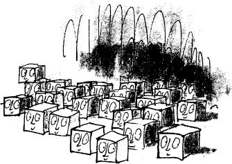

Everybody stopped and crowded to the door. The top half of the door was made of glass. Grandpa Joe lifted Charlie up so that he could get a better view, and looking in, Charlie saw a long table, and on the table there were rows and rows of small white square-shaped sweets. The sweets looked very much like square sugar lumps – except that each of them had a funny little pink face painted on one side. At the end of the table, a number of Oompa-Loompas were busily painting more faces on more sweets.
‘There you are!’ cried Mr Wonka. ‘Square sweets that look round!’
‘They don’t look round to me,’ said Mike Teavee.
‘They look square,’ said Veruca Salt. ‘They look completely square.’
‘But they are square,’ said Mr Wonka. ‘I never said they weren’t.’
‘You said they were round!’ said Veruca Salt.
‘I never said anything of the sort,’ said Mr Wonka. ‘I said they looked round.’
‘But they don’t look round!’ said Veruca Salt.
‘They look square!’
‘They look round,’ insisted Mr Wonka.
‘They most certainly do not look round!’ cried Veruca Salt.
‘Veruca, darling,’ said Mrs Salt, ‘pay no attention to Mr Wonka! He’s lying to you!’
‘My dear old fish,’ said Mr Wonka, ‘go and boil your head!’
‘How dare you speak to me like that!’ shouted Mrs Salt.
‘Oh, do shut up,’ said Mr Wonka. ‘Now watch this!’
He took a key from his pocket, and unlocked the door, and flung it open… and suddenly… at the sound of the door opening, all the rows of little square sweets looked quickly round to see who was coming in. The tiny faces actually turned towards the door and stared at Mr Wonka.
‘There you are!’ he cried triumphantly. ‘They’re looking round! There’s no argument about it! They are square sweets that look round!’
‘By golly, he’s right!’ said Grandpa Joe.
‘Come on!’ said Mr Wonka, starting off down the corridor again. ‘On we go! We mustn’t dawdle!’
BUTTERSCOTCH AND BUTTERGIN, it said on the next door they passed.
‘Now that sounds a bit more interesting,’ said Mr Salt, Veruca’s father.
‘Glorious stuff!’ said Mr Wonka. ‘The Oompa-Loompas all adore it. It makes them tiddly. Listen! You can hear them in there now, whooping it up.’
Shrieks of laughter and snatches of singing could be heard coming through the closed door.
‘They’re drunk as lords,’ said Mr Wonka. ‘They’re drinking butterscotch and soda. They like that best of all. Buttergin and tonic is also very popular. Follow me, please! We really mustn’t keep stopping like this.’ He turned left. He turned right. They came to a long flight of stairs. Mr Wonka slid down the banisters. The three children did the same. Mrs Salt and Mrs Teavee, the only women now left in the party, were getting very out of breath. Mrs Salt was a great fat creature with short legs, and she was blowing like a rhinoceros. ‘This way!’ cried Mr Wonka, turning left at the bottom of the stairs.
‘Go slower!’ panted Mrs Salt.
‘Impossible,’ said Mr Wonka. ‘We should never get there in time if I did.’
‘Get where?’ asked Veruca Salt.
‘Never you mind,’ said Mr Wonka. ‘You just wait and see.’